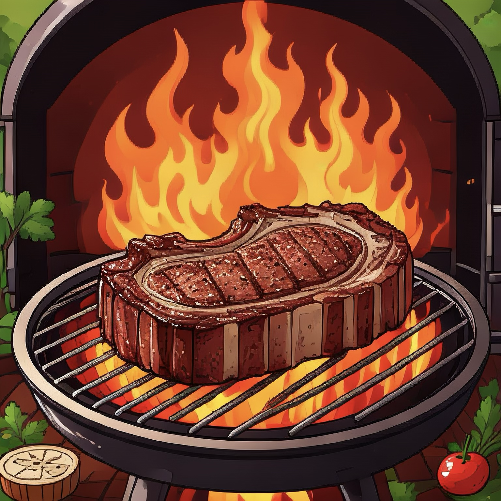

Pat down steak dry with a paper towl. Season both sides of the steak with a generous amount of salt and pepper or seasoing of choise.
Heat a thin layer of avocado oil in a cast iron skillet on high heat until oil starts to shimmer and lightly smoke
Slowly place steak onto the hot pan, slightly reduct the heat, and let it cook for 1 minute to allow the steak get a crust on it's surface
Flip the steak and allow the other side to sear as well for 1 minute
After the minute is up, reduce the heat to low and go ahead and the butter, shallots, garlic, and thyme to the pan
Once the butter is melted, we tilt the pan and have the steak on the opposite side and with a spoon bath the steak with the butter and herbs for about two minutes
After the two minutes are up, remove the steak from the pan and allow it to rest for a few minutes
Your steak is now ready, just slice against the grain and serve, and enjoy your perfectly cooked steak!